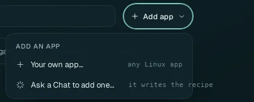
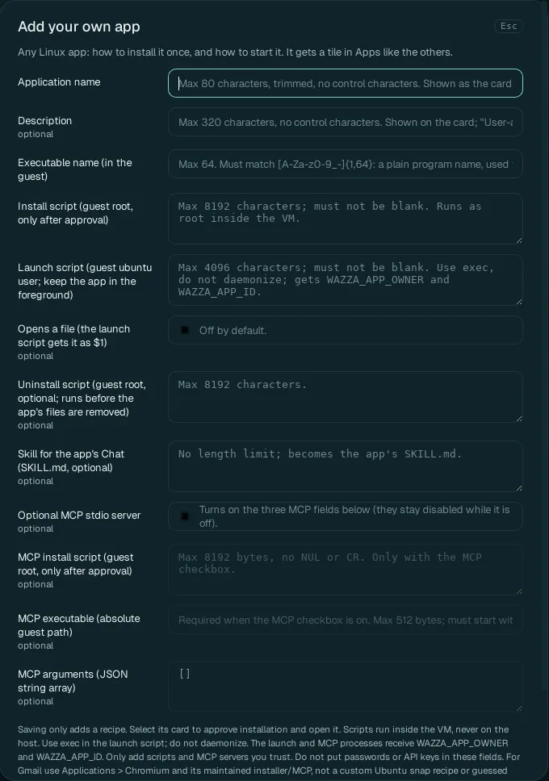
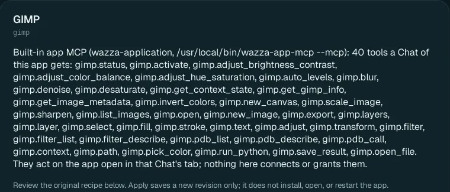
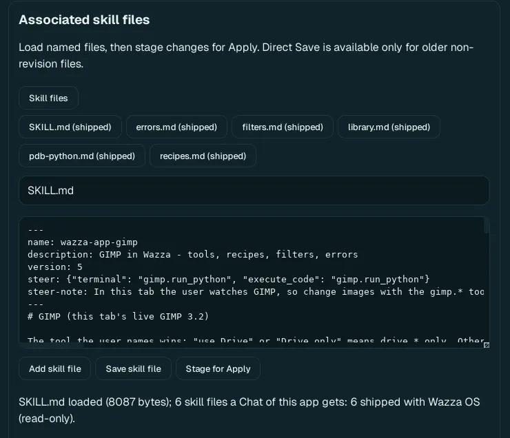
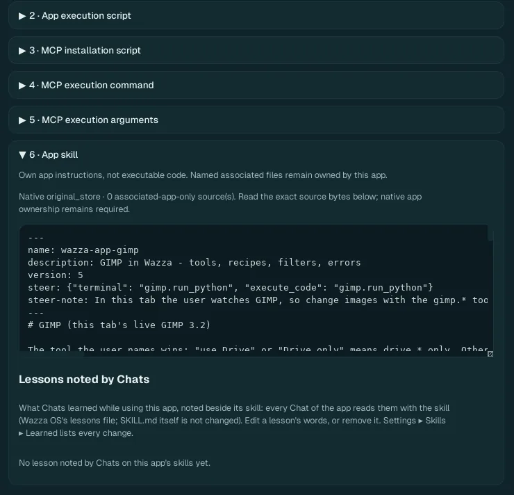

Add your own apps
Any Linux app that runs on Ubuntu can become a Wazza OS app. Its recipe says how to install it in the VM once and how to start it. It then gets a card in Apps, opens in tabs with its own Chat, and can bring its own tools for agents and its own skill.
Two ways to add an app#

| Way | For |
|---|---|
| Ask a Chat to add one… | Everyone: say which app; the agent finds how to install it, writes and checks the recipe, and installs it. |
| Your own app… | When you know the commands: a form with every field of the recipe. |
Ask a Chat to add an app#
Home › Apps › Add app › Ask a Chat to add one…. A new Chat tab opens with this already in its send box: Add this app to Wazza OS's Apps (write its recipe, save it, then install it):
Finish the sentence with the app, and anything that matters to you, then send. For example: Krita, the painting app, from the Ubuntu packages.
The agent writes the recipe, checks it, saves it and installs the app in the VM, telling you what it does in the Chat. Like everything an agent does in the VM, this runs without asking you; say in your message if you want to read the recipe before it installs.
When it is installed, its card is in Apps (filter Your apps), and the agent can open it.
A Chat can also change a recipe later ("make Krita open files", "add this skill to Krita"). If the app has its own tools (an MCP server) that work without its window, the agent can make them available to every Chat of the VM; otherwise only the Chat of a tab where the app is open gets them.
Fill the form#

1 2 3 4What the card shows, and how Wazza OS knows the app is installed.
How it installs and how it starts.
What its Chat knows about it (its skill).
Its own tools for agents (optional).
| Field | Rules | What it is |
|---|---|---|
| Application name | Required; up to 80 characters | The card's name. |
| Description | Optional; up to 320 characters | The card's short words (empty: "User-added application"). |
| Executable name (in the guest) | Required; a plain program name: letters, digits, _ and -, up to 64 |
The program Wazza OS looks for to know the app is installed, for example krita. |
| Install script | Required; up to 8192 characters | Shell commands that install the app. They run as the administrator (root) inside the VM, never on your computer, and only after your approval. |
| Launch script | Required; up to 4096 characters | Starts the app, as the VM's user. Keep the app
in the foreground: start it with exec, do not send it to the background. It gets the variables
WAZZA_APP_OWNER and WAZZA_APP_ID. |
| Opens a file | Off by default | On: the app can open files (double-click in the Explorer, "open
this in Krita"); the launch script gets the file as $1. |
| Uninstall script | Optional; up to 8192 characters | Runs as root before the app's files are removed, when you uninstall it. |
| Skill for the app's Chat | Optional; no length limit | Becomes the app's SKILL.md: what
the agent of this app's tabs reads first (its menus, its shortcuts, what to avoid). You can add more skill files
later in Edit app. |
| Optional MCP stdio server | Off by default | Turns on the three fields below: the app's own tools for agents (see below). |
| MCP install script | Optional; up to 8192 bytes | Installs the tools' server (root, in the VM, after approval). |
| MCP executable | Required with MCP; a full path in the VM starting with /, up to 512 bytes | The server's program. |
| MCP arguments | A JSON list of up to 32 strings; default [] | The words given to the server. |
The scripts run with full rights inside the VM: add only scripts and servers you trust. Never put a password or an API key in these fields.
Then Add app. Saving only adds the recipe: "<name> saved. Select its card to approve installation and open it." Click the card (in Your apps): your click approves the installation, which runs in a new tab like any app's (Install an app).
Example: XTerm#
Load XTerm example fills the form with a small working app, a terminal:
| Field | Value |
|---|---|
| Application name | XTerm |
| Description | A guest X11 terminal |
| Executable name | xterm |
| Launch script | exec /usr/bin/xterm |
Install script:
set -eu
apt-get -o Acquire::ForceIPv4=true update
DEBIAN_FRONTEND=noninteractive apt-get install -y xtermThe same pattern works for any app of Ubuntu's packages: change the name, the program and the package.
Give your app tools#
An app's tools let its agent do exact operations (GIMP's agent has 40, from "new image" to "export"). They come
from an MCP server: a program in the VM that speaks the Model Context Protocol over its standard input and output.
Turn on Optional MCP stdio server, then give how to install it, its full path and its
arguments. The server gets WAZZA_APP_OWNER and WAZZA_APP_ID, so it knows which app and tab
it serves. Its tools reach the Chat of a tab where the app is open.
Edit an app#
Right-click an app's card in Apps › Edit app…. A tab named Edit App — <name> opens; it works for the apps of the catalog too.

- The app's tools: the list of tools its Chat gets, by name.
- Six sections, each folded: 1 App installation script, 2 App execution script, 3 MCP installation script, 4 MCP execution command, 5 MCP execution arguments, 6 App skill. For an app that comes with Wazza OS, a note at the top says which parts you can change: for GIMP, its installation script (as your own version), while how it starts stays read-only.
- Apply saves your changes as a new version of the recipe. It does not install, open or restart the app: a changed installation script takes effect when you install the app again.
- Discard unsaved edits forgets your changes; Close editor tab closes it.
Edit an app's skill#
An app's skill is what its agent knows about it. It can be several files: GIMP's are SKILL.md (the
main one), and topics such as errors, filters, recipes and its Python scripting.

1 2 3Click Skill files, then a file. (shipped) marks a file that comes with Wazza OS; the line at the bottom says how many files the app's Chat gets, and whose they are.
Change its text.
Save skill file: your copy is saved for this app and replaces the shipped file for its Chats. Or Stage for Apply: the change is saved with the recipe's next Apply.
- Revert to shipped (shown on a file you saved over a shipped one) removes your copy: the shipped file is used again.
- Add skill file: a new topic for the app: type a new name ending in
.mdand its text, then save or stage it.

Lessons noted by Chats: what Chats learned while using this app (How Wazza OS learns). Every Chat of the app reads them with its skill; the skill file itself is not changed. Change a lesson's words, or remove it; Settings › Skills & learning › Learned changes lists every change with its Undo.
Remove an app you added#
Uninstall it from every VM that has it: right-click its card › Uninstall from vm-1… (Uninstall an app).
Right-click its card › Remove from catalog…: its recipe goes, with its card.
Only an app you added can be removed from the catalog; while it is installed, the menu says Uninstall it from vm-1 first.
From the command line#
A recipe is a JSON file (the wazza.app.v1 format). Start from a template, edit it, check it, save it:
$ wazza --gui app template apt --skill > myapp.json
$ wazza --gui app validate --stdin < myapp.json
$ wazza --gui app save --stdin --install --vm vm-1 < myapp.json
$ wazza --gui app list
$ wazza --gui app remove APP_IDTemplates: apt (Ubuntu packages) or script (your own install script), with
--mcp and --skill to include those parts. More: The command line › Apps.